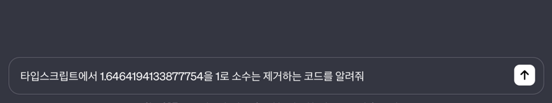
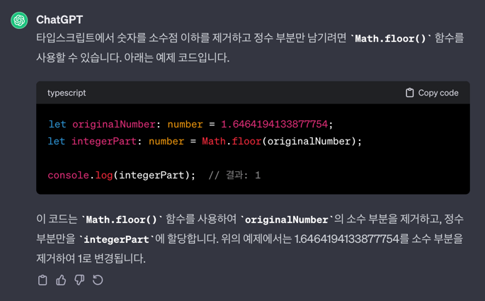
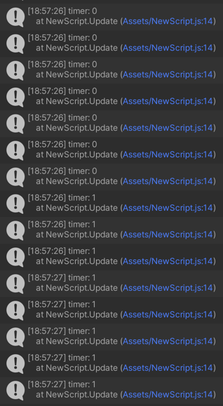
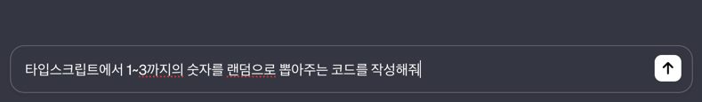
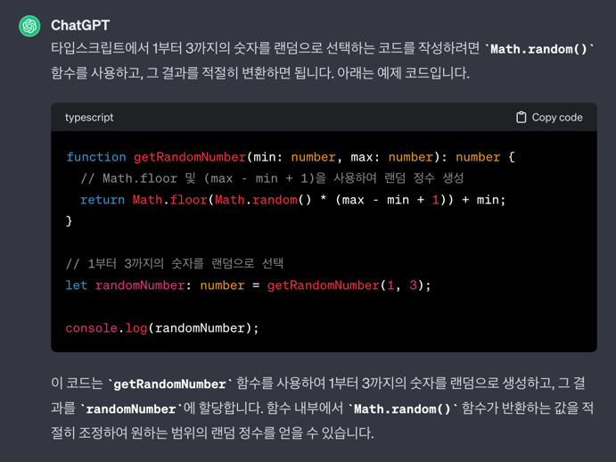
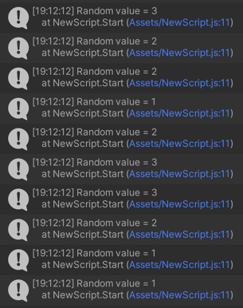

Chat GPT 활용하기
ChatGPT 를 활용하면, 필요한 정보를 찾을 때 도움을 받을 수 있습니다.
소수점 내림하기
 deltaTime 을 통해 합산된 시간이 소수점을 제외하고 초단위로만 출력되도록 ChatGPT 에 문의합니다.
 제페토에 사용되는 프로그래밍 언어는 타입스크립트 이기 때문에, 타입스크립트라고 명시해 주는 것이 좋습니다.
유니티 제페토에서 코드는 클래스 내부에서 작성하지만, ChatGPT 의 응답은 클래스가 아닌 결과라서 사용하기에 약간의 차이가 있습니다.
- import { Time } from 'UnityEngine'; import { ZepetoScriptBehaviour } from 'ZEPETO.Script' export default class NewScript extends ZepetoScriptBehaviour { private timer: number = 0; Start() { } Update() { this.timer = this.timer + Time.deltaTime; console.log(`timer: ${Math.floor(this.timer)}`); } }
ChatGPT 가 알려준대로, Math.floor 를 사용하도록 코드를 수정합니다.
 소수점은 버려지고 자연수만 로그로 출력됩니다.
랜덤한 수 뽑기
 이번에는 확률에 대한 처리를 위해 랜덤한 수(난수) 를 뽑는 코드를 작성해보겠습니다.
 함수가 아니라 클래스 내부의 메서드를 생성하는 것이기 때문에 function 은 제거해야 합니다.
타입스크립트에서 변수를 선언할 때, var 이외에 let 으로도 선언이 가능하지만, 항상 var 로 생성해 주시는 편이 좋습니다.
- import { ZepetoScriptBehaviour } from 'ZEPETO.Script' export default class NewScript extends ZepetoScriptBehaviour { Start() { for (var i:number = 0; i < 10; i = i + 1) { console.log(`Random value = ${this.getRandomNumber(1, 3)}`); } } getRandomNumber(min: number, max: number): number { return Math.floor(Math.random() * (max - min + 1)) + min; } }
ChatGPT 가 알려준 코드를 상황에 맞게 약간 수정하여 추가합니다.
for 문을 사용하여, 10개의 난수를 생성합니다.
 1~3 까지의 난수 10개가 생성됩니다.
Last modified: 20 1월 2024